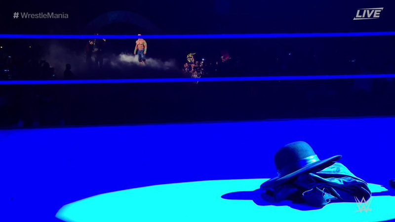

La historia secreta de cómo Alemania Oriental y la Unión Soviética construyeron el Muro de Berlín

Llegó más fuerte que nunca. El Undertaker respondió al llamado de John Cena y no demoró mucho para vencerlo en un escenario donde se siente cómodo, como WrestleMania 34.
John Cena llegó a Nueva Orleans como parte del público, pero al saber del ingreso del 'Enterrador', corrió a ponerse su indumentaria de pelea. Al principio, 'The Marine' no tuvo éxito porque Elias interrumpió con su guitarra y tras sacarlo de combate con un 'Ajuste de Actitud', vendría el momento de ver al más grande de la historia de WrestleMania.
En el ring se vio el sombrero y la capa del 'Enterrador'. Acto seguido, 3 truenos dieron inicio a las campanas de la música de entrada del Undertaker que llegó a WrestleMania dispuesto a vencer a Cena.
No pasó mucho (menos de 5 minutos) para que con una 'Tumba Rompecuellos', el 'Hombre Muerto' se lleve su victoria 24, número que contrasta con las 2 caídas que tuvo en WrestleMania ante Brock Lesnar y Roman Reigns.
Dato. Fue precisamente en Nueva Orleans donde se acabó la racha invicta del Undertaker en WrestleMania, por eso este triunfo tuvo un sabor especial para sus fanáticos.
La historia secreta de cómo Alemania Oriental y la Unión Soviética construyeron el Muro de Berlín

Henry y Baloo: el perro y el gato viajeros que cautivan a miles de usuarios en Instagram por su tierna "amistad"

Qué son las ERC, las bacterias "pesadilla" que preocupan a los médicos en Estados Unidos
Sed varius enim lorem ullamcorper dolore aliquam aenean ornare velit lacus, ac varius enim lorem ullamcorper dolore. Proin sed aliquam facilisis ante interdum. Sed nulla amet lorem feugiat tempus aliquam.